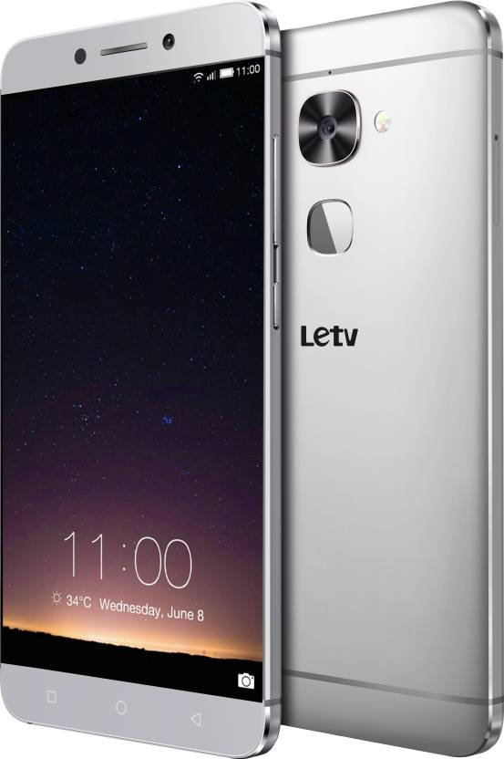

Смартфон WileyFox swift 2

Тонкий стильный металлический корпус и мощная производительная база стали доступней с Wileyfox Swift 2. Строгий корпус с плавными перетекающими линиями выполнен из матированного алюминия; прохладный на ощупь, стильный и очень прочный металлический Wileyfox толщиной всего 8.6 мм дарит приятные тактильные ощущения. Благодаря компактным размерам и небольшому весу смартфон естественно лежит в руке и удобен в работе. HD дисплей с диагональю 5″ демонстрирует качественное изображение с естественной цветопередачей и высоким спектром цветов. Восьмиядерный процессчор Qualcomm Snapdragon 430 с частотой 1.4 ГГц открывает новые возможности в использовании смартфона. Наличие спутниковых навигационных системы GLONASS и GPS позволяет всегда находиться в системе координат и иметь доступ к гео-данным из любого полушария Земли. Wileyfox Swift 2 имеет 16 ГБ встроенной Flash-памяти. При необходимости вы сможете расширить этот внушительный объём до 64 ГБ благодаря наличию слота для microSDXC. Поддержка самых популярных в мире диапазонов 4G LTE позволит вам свободно пользоваться высокоскоростным соединением в любой стране и загружать данные со скоростью до 150 Мб/с. А возможность использования двух SIM-карт позволяет использовать один смартфон для разных целей. Камеры 13 МП (основная) и 8 МП (фронтальная) позволят делать превосходные фотографии и снимать максимально детализированные и качественные видео. Wileyfox Swift 2 оснащён сканером отпечатков пальцев, технологией NFC, а также разъёмом USB Type-C, и работает под управлением открытой операционной системы Cyanogen OS 13.1.
Подробное описание товараСмартфон LeEco Le 2 32 ГБ серый
Дизайн смартфона LeEco Le 2 основан на трех аспектах красоты: тонкий корпус создан с учетом эффекта преломления света и тени, золотой оттенок — это дань эстетике цвета, а идеальная симметрия — законам композиции. HD-дисплей с разрешением 1080p позволяет разглядеть каждую деталь. Тщательно продуманный фильтр синего света снижает нагрузку на глаза и риск ухудшения зрения. Яркость экрана можно регулировать от 1 до 500 нитов. А инновационная технология SilksSwipe обеспечивает быстрый отклик и более удобную работу с экраном. «Похудев» на 0.5 мм, смартфон LeEco Le 2 стал не только легче, но и заметно тоньше. Слегка закругленные края, соединяющие заднюю и боковые части, а также продуманное сочетание света и тени придают корпусу невероятное чувство обтекаемости. С-образные линии на всех четырех углах подчеркивают контраст между металлическим блеском и матовой поверхностью, создавая ультрасовременный образ. Умный сканер отпечатка пальца — Le 2 понимает, когда ты используешь сенсор, чтобы разблокировать смартфон, а когда — чтобы сделать селфи.
Подробное описание товара